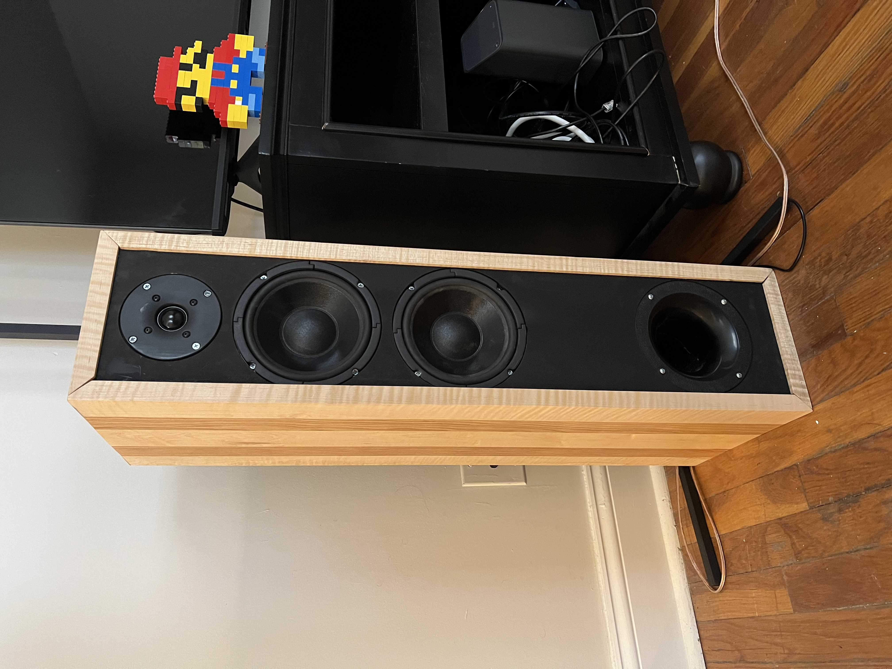
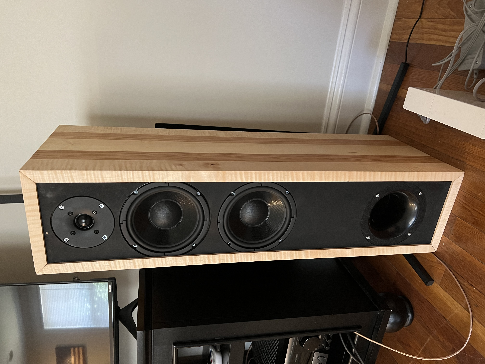
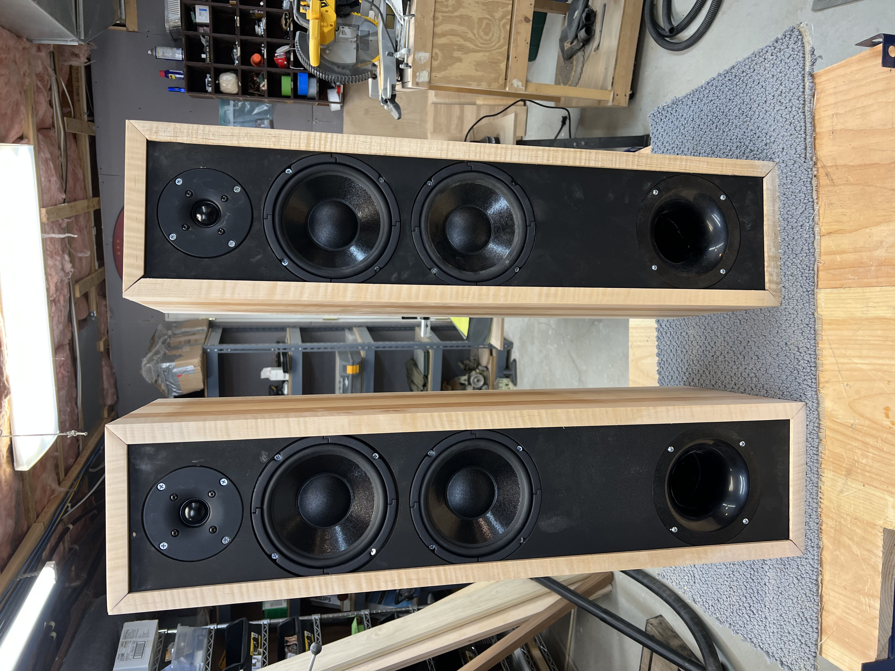
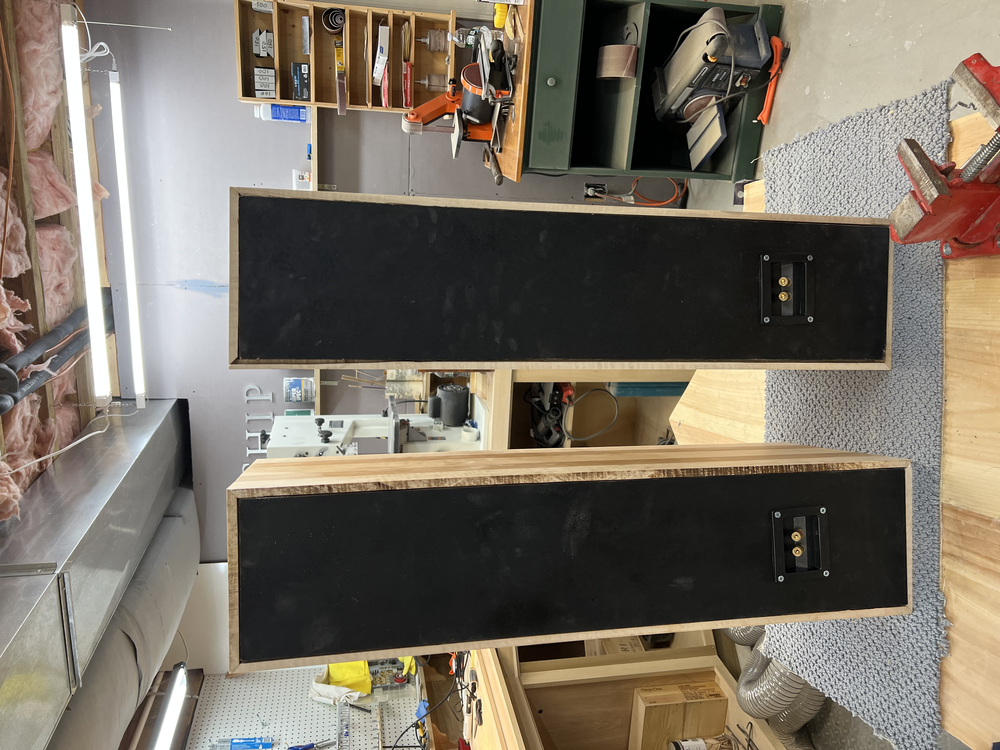

This website documents John Fattore's summer 2022 stereo speaker build, which consist of 2 floorstanding speakers.
Jump to different parts of the build though the top navigation bar or follow the step by step using the links at the bottom of each page
|  |  |
|  |  |